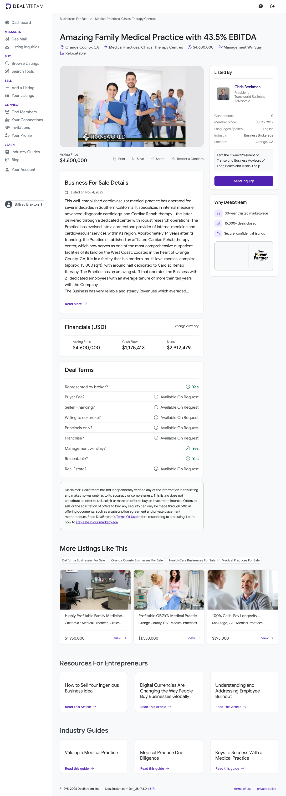

Cardiovascular Medical Practice with Cardiac Rehab Center — Prospect Evaluation
Prepared for Biffrey Braxton / EarnedOut ·
2026-05-21 ·
Lead source: DealStream listing i01naw ·
Orange County, CA
Buy Box: Conditional
75
Lead Score / 100
Buy Box Screening
#
Criterion
Status
Evidence
1
≥ 10 full-time employees
PASS
Listing: 21 employees, average tenure 10+ years.
2
EBITDA $1M–$4M / year
PASS
3-yr avg EBITDA ≈ $1.315M; single-period cash flow $1,175,413 — both inside the band.
3
10+ years in business
PASS
"Operating for several decades"; broker materials describe 40+ years in Southern California.
4
3+ yrs YoY revenue & profit growth
INSUFFICIENT
Listing discloses only 3-yr averages, not year-by-year figures. Consecutive growth cannot be confirmed.
5
Asking price ≤ 4.0x EBITDA
PASS
$4.6M ÷ $1.315M = 3.50x (3.91x on single-period cash flow $1,175,413) — both ≤ 4.0x.
6
DSCR > 1.4 (informational)
INSUFFICIENT
Not computable without debt terms. SBA Pre-Approved (10% down / 90% financing). Informational only.
Overall Buy Box: CONDITIONAL — 4 of 6 PASS, no hard FAIL. Criterion 4 is the only open hard item and is resolvable by obtaining year-by-year P&Ls from the broker. The asking price is already inside the 4.0x ceiling — no multiple negotiation required.
Scorecard (26 fields)
#
Field
Value
Source
1
Business Name
Cardiovascular Medical Practice with Cardiac Rehab Center (listing title: "Amazing Family Medical Practice with 43.5% EBITDA"); legal name not disclosed
Insufficient data — only 3-yr averages disclosed. Not awarded; not a finding that growth is absent.
Recurring revenue
5
10
No contracted revenue, but a multi-decade chronic-cardiac patient base with recurring diagnostics and multi-session rehab = repeat-but-not-contracted.
Customer concentration <20%
0
5
Not disclosed — cannot confirm <20%. Payer (Medicare) concentration unknown.
Employees ≥10
10
10
21 employees.
Valuation multiple
15
15
3.50x on 3-yr avg EBITDA (3.91x on single-period cash flow) — ≤ 4.0x → full 15 pts.
Low owner dependence
0
5
Owner is the interventional cardiologist / Medical Director and daily clinical operator. High key-person dependence.
Roll-up / add-on strategic fit (BONUS)
0
10
N/A — standalone target (not a translation or waste add-on).
Total
75
100
70–84 band: pursue with conditions.
1. Executive Summary
Company overview: A multi-decade cardiovascular medical practice in Orange County, CA, combining internal medicine, advanced diagnostic cardiology, and a dedicated outpatient Cardiac Rehab / EECP therapy center described as one of the most comprehensive on the West Coast. Operates from an owner-occupied ~15,000 sq ft multi-level medical complex with 21 staff (avg tenure 10+ years).
Buy Box summary: CONDITIONAL — passes employees, EBITDA range, tenure and valuation multiple; the 3-year consecutive-growth criterion is unverifiable from the listing (only averages disclosed).
Why pursue (or not): Pursue — priced inside the 4x ceiling (rare for healthcare; cardiology trades 8–18x to PE), strong margins, retirement seller, real estate available, SBA pre-approved, deep-tenured staff. Caution — California's corporate-practice-of-medicine doctrine restricts non-physician ownership; clinical continuity depends on a successor cardiologist; the recent single-period cash flow sits ~11% below the 3-yr average.
2. Company Overview
Background and history. A well-established cardiovascular practice operating for several decades (40+ years, est.) in Southern California. It began as an internal-medicine / cardiology practice and, roughly 14 years after founding, established an affiliated outpatient cardiac-rehabilitation therapy center (EECP — enhanced external counterpulsation), now operating with its own research operations and positioned as one of the most comprehensive outpatient cardiac-rehab facilities on the West Coast.
Ownership structure. Privately held by the founding owner-physician (entity type not disclosed; California medical practices are typically professional corporations). The owner also personally owns the underlying real estate and is open to selling the practice and the building together.
Key milestones. ~1980s (est.) — practice founded. ~14 years post-founding — affiliated EECP / cardiac-rehab center established. 2025-11-04 — listed for sale via Transworld Business Advisors (broker Chris Beckman).
Organizational structure. 21 employees with average tenure 10+ years — a stable operating team. The retiring owner serves as the interventional cardiologist and Medical Director. No second physician or non-owner clinical lead is named in the listing — a key diligence gap.

3. Principals & Leadership
Owner-Physician — Medical Director / Interventional Cardiologist
Clinical leader of the practice; performs/supervises diagnostic cardiology and oversees the cardiac-rehab center; the day-to-day clinical operator. Broker materials describe a seasoned interventional cardiologist with 40+ years of experience. Name not disclosed in the public listing (behind CABB NDA). Preparing to retire; willing to stay on 1–3 years post-close to transition. All seller contact is routed through the broker.
Chris Beckman — Listing Broker (President, Transworld Business Advisors of Long Beach, Tustin & Irvine)
Internal medicine — primary/internal-medicine care for an established, largely chronic-cardiac patient base. Advanced diagnostic cardiology — non-invasive cardiac diagnostics (echocardiography, stress testing, ECG, vascular studies). Cardiac Rehab therapy center — a dedicated outpatient facility delivering EECP and cardiac-rehabilitation services with affiliated research operations, marketed as among the most comprehensive on the West Coast.
Pricing model: Fee-for-service medical billing — Medicare, Medicare Advantage, and commercial insurance reimbursement, plus some self-pay. EECP is covered by Medicare for refractory Class III/IV angina under National Coverage Determination 20.20 and by several commercial payers under defined clinical criteria.
Differentiators: Multi-decade brand and referral base in Orange County; rare combination of internal medicine + diagnostic cardiology + a dedicated EECP/cardiac-rehab center under one ~15,000 sq ft roof; deep-tenured staff; owner-occupied real estate available with the deal; a 43.5% EBITDA margin materially above typical physician-practice norms.
5. Market Analysis
Industry size and trends. Cardiology is one of the most actively consolidated physician specialties — 342 PE acquisitions of cardiology clinics from 2013–2023, with 94%+ in 2021–2023, and the pace continued through 2025–2026. PE-backed platforms (Cardiovascular Associates of America, US Heart & Vascular, Cardiovascular Logistics) are actively acquiring. The U.S. external counterpulsation (EECP) device market was ~$177.6M in 2024, projected to ~$372.9M by 2034 (7.7% CAGR), with cardiac rehab expanding into preventive/maintenance and home-based delivery.
Drivers and barriers. Drivers — aging population, rising cardiovascular disease prevalence, migration of cardiac procedures outpatient, payer support for cardiac rehab/EECP. Headwinds — physician-practice reimbursement pressure, California's corporate-practice-of-medicine restrictions, and rising staffing/infrastructure costs.
Competitive / valuation benchmarks. PE platform cardiology practices ~12–15x EBITDA; cardiology add-on acquisitions ~8–12x; healthcare-services median EV/EBITDA ~11.5x in 2025 (down from ~14.5x in 2024). Against any of these, this listing at 3.50x is priced far below market — favorable for a buyer, but the gap warrants scrutiny of scale, single-physician dependence, and the recent cash-flow dip.
6. Customers & Revenue Model
Segments. Individual patients — predominantly older adults with cardiovascular and chronic-care needs in Orange County, CA. B2C medical services billed primarily to Medicare / Medicare Advantage and commercial insurers.
Retention. Not disclosed. Chronic cardiac-care relationships are typically long-lived and recurring (ongoing monitoring, repeat diagnostics, multi-session EECP/rehab courses).
Recurring vs one-time. No contracted/subscription revenue. Revenue is fee-for-service but functionally recurring via a stable chronic-disease patient panel and multi-session rehab programs — treated as "repeat but not contracted."
Concentration. Patient-level concentration is presumed low (large patient panel). The more relevant exposure is payer concentration — the Medicare share of revenue — which is undisclosed and should be confirmed in diligence.
7. Financial Analysis
The listing discloses 3-year averages and one single-period figure; year-by-year revenue/EBITDA were not published.
Period
Revenue
EBITDA
Margin
YoY
3-yr average
$3,019,000
$1,315,000
43.6%
n/d
Single period (most recent)
$2,912,479
$1,175,413 (cash flow)
40.4%
n/d
Revenue / earnings trajectory
Year-by-year data is unavailable, so consecutive YoY growth cannot be confirmed (Buy Box criterion 4 = insufficient). Note the most recent single-period cash flow ($1.175M) sits ~11% below the 3-year average EBITDA ($1.315M), and single-period sales ($2.912M) ~3.5% below the 3-yr average revenue ($3.019M) — consistent with either a modestly down most-recent year or normal variance. Resolve with year-by-year P&Ls before pursuit.
Estimated valuation
Implied multiple at ask: 3.50x on 3-yr avg EBITDA ($4.6M ÷ $1.315M); 3.91x on single-period cash flow ($4.6M ÷ $1.175M). Both below Biffrey's 4.0x ceiling — no markdown negotiation needed on the multiple. The real valuation question is the quality of the earnings base: confirm the 43.5% margin is sustainable and not inflated by owner add-backs, below-market owner-physician compensation, or below-market rent on the owner's building.
8. SWOT Analysis
Strengths
43.5% EBITDA margin — far above typical physician-practice norms
40+ year brand; 21 staff with 10+ yr average tenure
Owner-occupied ~15,000 sq ft complex available with the deal
Weaknesses
Single retiring owner-physician is the Medical Director — high key-person / clinical-license dependence
Only 3-yr averages disclosed; consecutive YoY growth unverified
Recent single-period cash flow ~11% below the 3-yr average
Small absolute EBITDA scale (~$1.3M) caps the EBITDA-tier score
Opportunities
Cardiology is a hot consolidation segment — strong resale / roll-up optionality
EECP / cardiac-rehab market growing 7.7% CAGR to 2034
Add service lines, extend hours, recruit additional cardiologists
Acquire the real estate to lock occupancy cost and build equity
Threats
California CPOM doctrine restricts non-physician ownership of the medical entity
Medicare / commercial reimbursement pressure on physician practices
Failure to recruit a successor cardiologist would impair operations and revenue
Margin may compress once market-rate physician comp and rent are loaded in
9. Risk Factors
Industry: Physician-practice reimbursement pressure; EECP coverage limited to specific clinical indications (refractory Class III/IV angina, NCD 20.20); shifting Medicare fee schedules.
Financial: Year-by-year revenue/EBITDA not disclosed — growth trend unverified; most recent single-period cash flow below the 3-yr average. The headline 43.5% margin must be stress-tested for owner add-backs, below-market owner-physician compensation, and below-market rent (owner occupies own building). Payer concentration (Medicare %) undisclosed.
Operational: Severe key-person dependence — the retiring owner is the interventional cardiologist and Medical Director. Continuity depends on the 1–3 yr transition holding and on recruiting/retaining a successor cardiologist. Tenured staff is a strength but also a retirement-cluster risk.
Regulatory / legal: California Corporate Practice of Medicine (CPOM) — a non-physician (or non-physician-owned entity) generally cannot own a California medical practice; the deal likely must be structured via a friendly-PC / MSO arrangement with a licensed physician owning the professional entity. Medical licensure, DEA registration, payer re-credentialing, and CLIA/diagnostic-equipment compliance all transfer-condition the close. Verify Medical Board of California licensure and disciplinary history of the owner-physician.
Deal conditions: (1) Obtain 3 years of year-by-year P&Ls to confirm consecutive revenue and profit growth. (2) Obtain a quality-of-earnings / add-back schedule to validate the 43.5% margin. (3) Confirm a CPOM-compliant deal structure and a credible successor-physician plan. (4) Separately value/negotiate the real estate. (5) Confirm payer mix and Medicare concentration. No multiple negotiation needed — ask is already ≤ 4.0x.
10. Outlook & Growth Opportunities
Expansion potential: Recruit additional cardiologists / advanced-practice providers to add capacity beyond the founder; extend diagnostic and rehab-center hours; add adjacent cardiovascular service lines (vascular, anticoagulation management, remote cardiac monitoring).
Operational upside: Install professional management and EOS-style operating processes; modernize scheduling, billing, and revenue-cycle management; optimize payer contracting; leverage the cardiac-rehab center's research operations as a marketing and referral differentiator.
Strategic opportunities: Cardiology is in an active consolidation cycle — a well-run independent cardiovascular practice with a dedicated rehab center is an attractive future add-on for a PE-backed cardiology platform (which trade 8–15x), offering clear multiple-arbitrage from a 3.5x entry. Acquiring the real estate locks occupancy cost and builds a separable asset.
100-day plan sketch: (1) Execute CABB NDA; obtain 3-yr year-by-year P&Ls, tax returns, payer mix, QoE/add-back schedule. (2) Engage healthcare counsel for a CPOM-compliant friendly-PC / MSO structure and lock SBA financing. (3) Secure the owner's 1–3 yr transition in writing and launch a successor-cardiologist search. (4) Negotiate the real estate purchase or a long-term market-rate lease. (5) Stand up revenue-cycle and payer-contracting improvements; retain key tenured staff with stay incentives.
11. Appendix
A. Data sources
dealstream.com/d/biz-sale/medical-practices/i01naw — primary listing (ID, asking price, cash flow, sales, 3-yr averages, employees, facility, seller motivation, deal terms). Accessed via authenticated session; figures used as disclosed.
BizQuest broker profile — corroborating practice description (40+ years, internal medicine + diagnostic cardiology + EECP rehab center).
Years in business: "operating for several decades" + broker materials referencing a 40+ year practice (rehab center added ~14 yrs after founding) → treated as 40+ years (est.). Affects narrative only; the ≥10-yr Buy Box criterion and 10-pt rubric line pass under any reading.
NAICS 621111 (Offices of Physicians, except Mental Health Specialists) — standard code for a physician/cardiology practice. The EECP/rehab center could alternatively map to 621340, but the practice is physician-led, so 621111 is primary.
Field #3 — Years in business — Estimated at 40+ years.
Method: listing language "operating for several decades" combined with broker materials describing a 40+ year Southern California cardiology practice that established its affiliated EECP center ~14 years after founding. No single primary source (CA SOS / professional-corporation filing) was confirmable from the public listing; labeled (est.).
Sources: DealStream i01naw; BizQuest broker profile.
No other scorecard values are estimated — all financial figures are taken as disclosed by the listing. No financials were fabricated.
DealStream listing i01naw (live, 2026-05-21) — primary source for all disclosed financial and operational facts.
E. Open questions for the seller / broker
Provide 3 years of year-by-year revenue and EBITDA (not just averages) — resolves Buy Box criterion 4.
Provide a quality-of-earnings / add-back schedule: what is in the 43.5% margin? Is owner-physician compensation at market? Is the practice charged market-rate rent for the owner's building?
Why is the most recent single-period cash flow (~$1.175M) below the 3-yr average (~$1.315M)?
Payer mix (Medicare / Medicare Advantage / commercial / self-pay) and Medicare share of revenue.
Proposed legal structure given California CPOM restrictions — friendly PC / MSO?
Is there a second physician or identified successor cardiologist, or must the buyer recruit one?
Medical Board of California licensure status and disciplinary history of the owner-physician.
Real estate: separate asking price, square-footage detail, and current lease/occupancy terms.
FT vs PT vs 1099 split of the 21 staff; clinical vs administrative roles.
Proposed SBA loan terms (rate, amortization, guaranty) to compute DSCR.